If you often look at photography, you will notice that many photographers like to use a foreground. Tree branches, flowers, plants, and stones can all serve as a foreground to add depth to the frame. Today I will introduce some foreground composition techniques.
I: Use a Foreground to Emphasize the Subject
In portrait photography, using a foreground the right way works very well to emphasize the subject and set the mood.
1. A framed foreground
For example, when you shoot, use a foreground object as a block. The frame it forms keeps the clutter around the edges from distracting you. Then the viewer's eye focuses on the main person inside the frame.
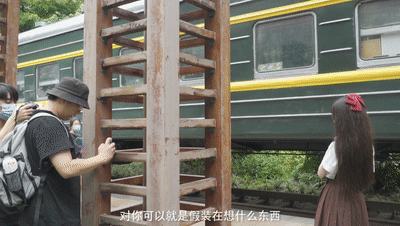
@zy.0516
So when you take photos, look around for objects that can serve as a foreground. Use branches to form a 'picture frame' and box the person inside it. This adds depth to the photo. Hold a handful of flowers and plants close to the lens, especially when you shoot portraitportraits, the blurred foreground of flowers and plants makes the frame more dreamy and gentle.
Make good use of these photographic foregrounds, and you can focus the viewer's eye, emphasize the main subject, and make your photos more appealing.
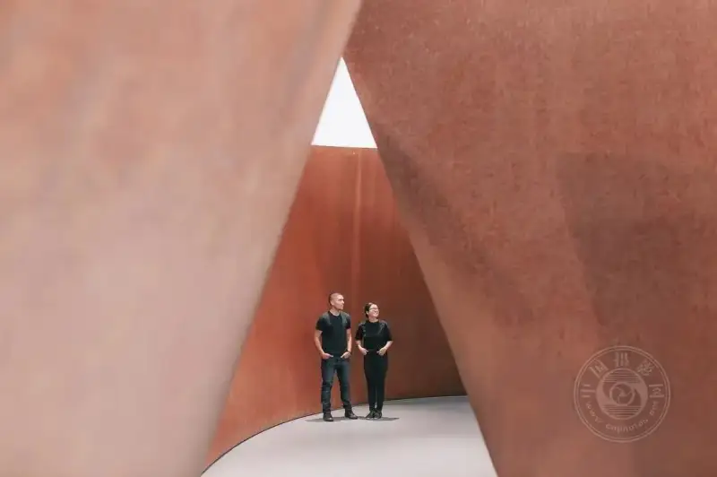
@Diane Villadsen
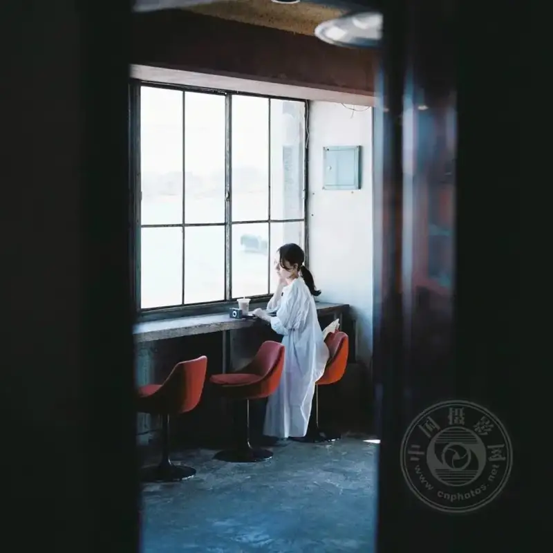
@tanachan6
©sakaitakahiro
2. A leading foreground
A leading foreground is similar to leading-line composition. When you shoot, check whether the frame has leading or extending objects (such as a road, railing, escalator, or wall). Try placing the person you photograph at the point where this kind of foreground object extends to. Follow the China Photo Network official account: wwwcnphotosnet for more photography tips and news.
When you take the photo, these leading lines guide the viewer's eye to the model. They effectively emphasize the subject and set the mood.
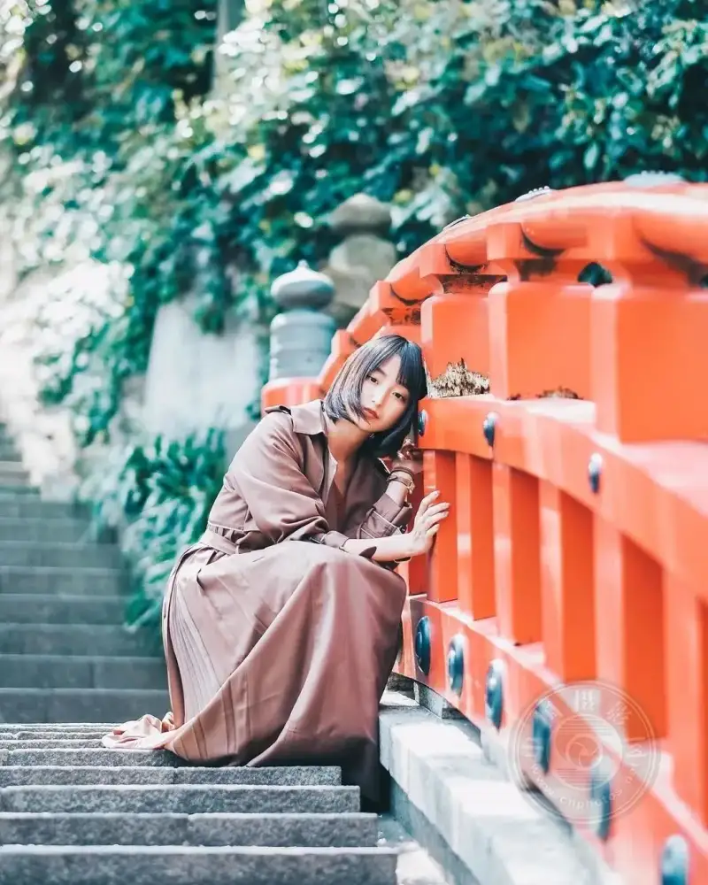
©zy.0516
@keisato_film
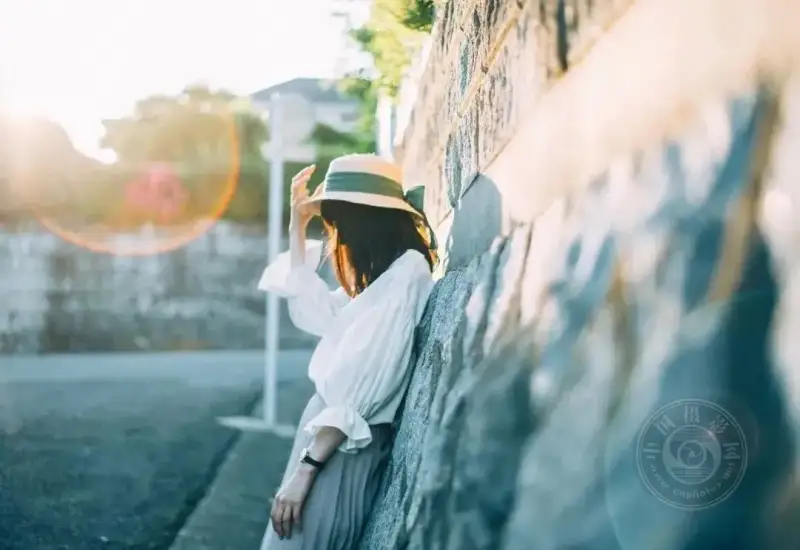
@sakaitakahiro_
3. A blurred foreground
In portrait photography, to make the main subject clearer and stand out, photographers often blur the background or the foreground to get the result they want. Whether you blur the background or the foreground, the main goal is to weaken the elements outside the subject and emphasize the visual effect of the subject.
A blurred foreground means that when the lens is close to a foreground object, you blur the foreground completely. It becomes a soft patch with a certain tone. Then you place the focus on the person, and you get a portrait with a blurred foreground.
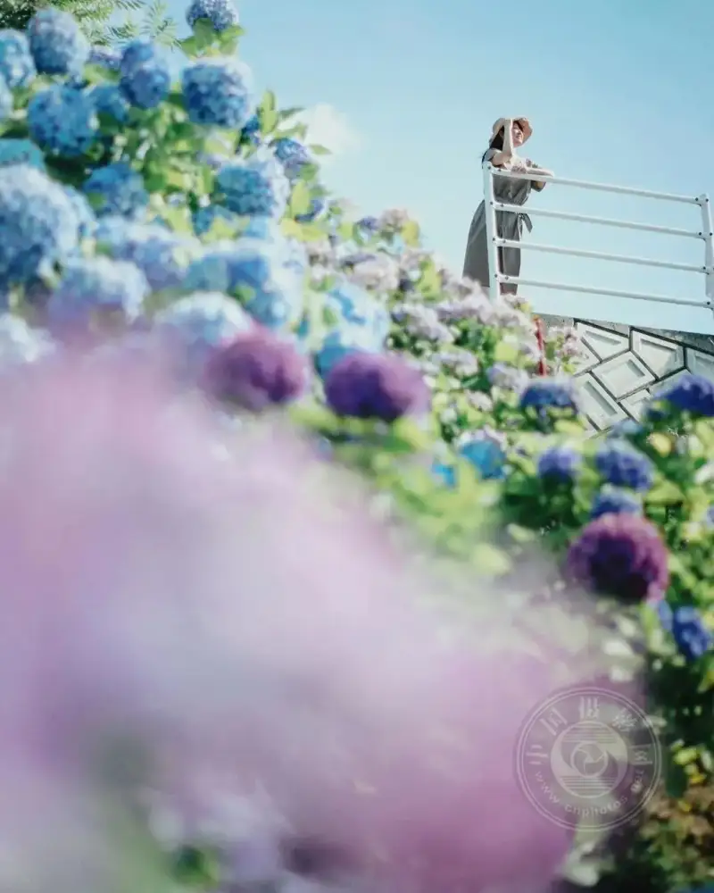
@Doi Natsumi
You use blurring often when the background or foreground is complex. This happens when there are many elements, the colors are messy, or the background elements do not fit the subject. In such cases, you blur the secondary elements.
To blur the foreground, you only need to move the lens close to the foreground. The closer you are, the stronger the blur. Sometimes, when you have no foreground object, you can hold a plant or something else in front of the lens to create a blurred foreground.
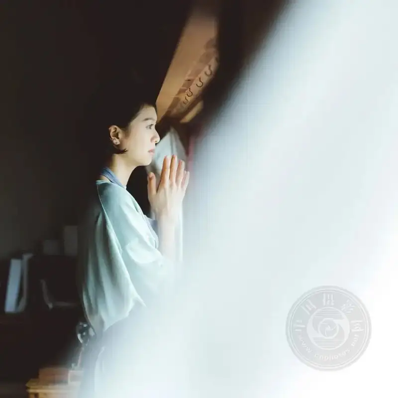
@Hideaki Hamada
One point to note: to get a good image of the person, adjust the distance between the subject and the foreground as you shoot.
@sakaitakahiro_
In short, when you shoot portraits, use a moderate foreground blur to emphasize the subject and add depth and formal beauty to the frame. Besides emphasizing the subject, it also adds depth and a hazy feeling. It gives portrait work more expressive power and formal beauty.
@takutaki
II: What Can Serve as a Foreground
After all this about the benefits and methods of a photographic foreground, what objects in daily life can serve as our foreground?
1. A gauze curtain
A clear or semi-transparent gauze curtain, when sunlight passes through it into a room, gives the space a touch of romance at once. As a photographic foreground, the gauze curtain mixes with light to create a faint, hazy feeling.
@marnkano
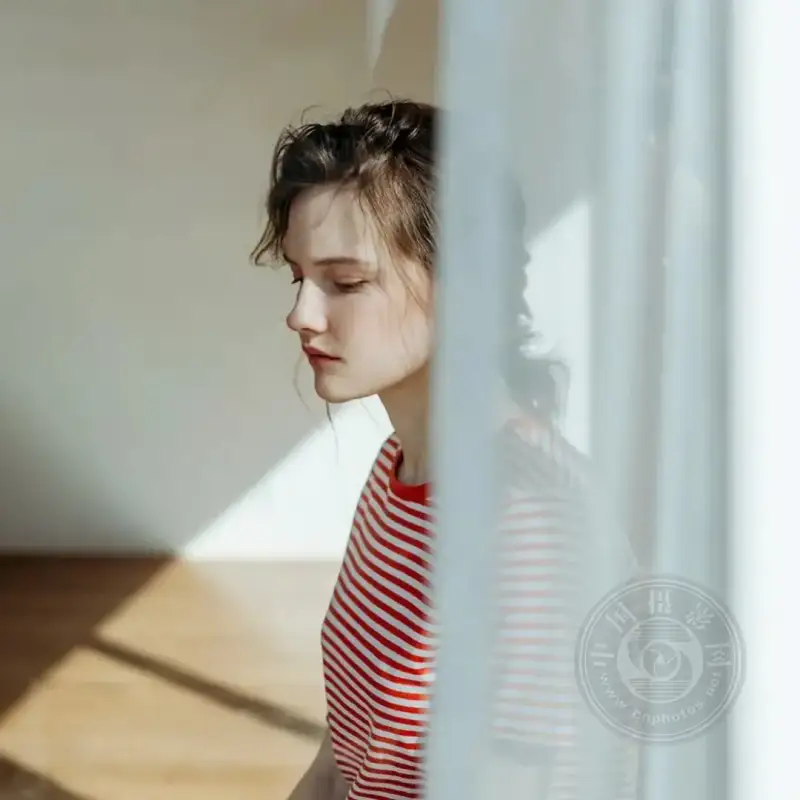
@takeru kohara
2. Sparklers and fairy sticks
For setting a mood, sparklers and fairy sticks are a good choice for a foreground, especially for portraits at the seaside.
Whether the beach rolls up layers of waves or the sea is calm, the bright sparks from sparklers and fairy sticks add a touch of beauty and dreaminess to the surroundings.
The mix and contrast of cool and warm tones in the frame lift the mood further. This brings out the best emotional expression of the person.
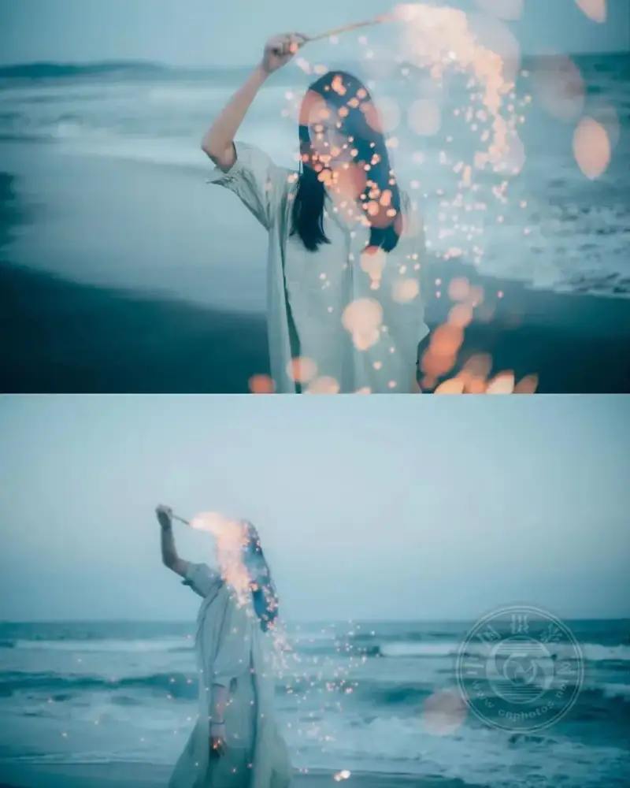
@takutaki
@Doi Natsumi
3. A transparent umbrella
On a rainy day, use a transparent umbrella as a foreground object. The spots of light create a dreamy scene, and the rainy-day story of a girl with an umbrella begins.
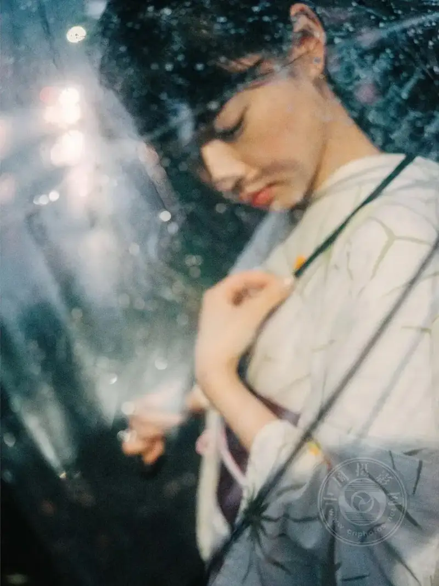
4. A glass window
There are other interesting foregrounds, such as the screen of a phone or camera when you shoot.
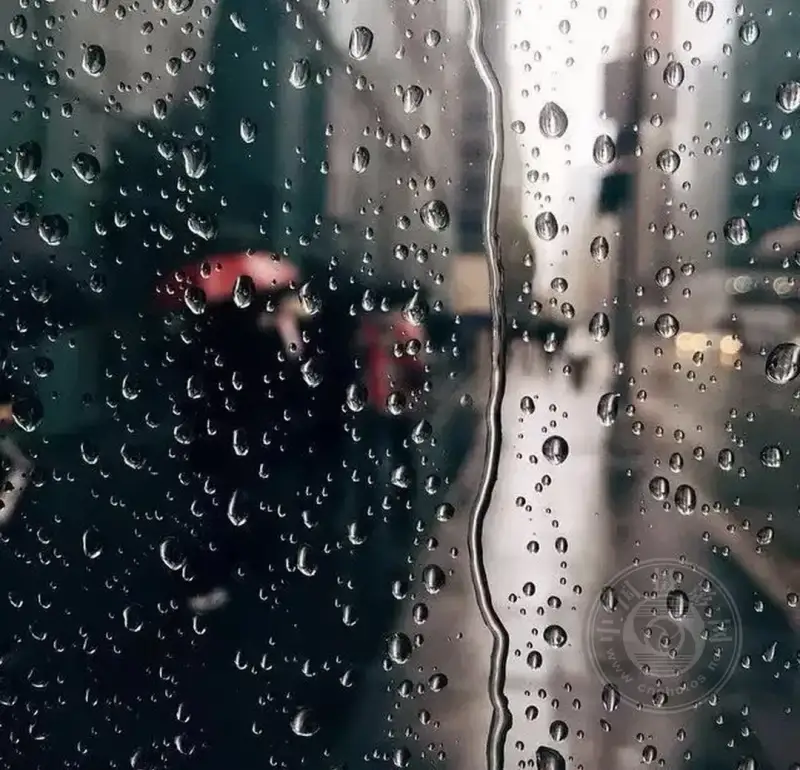
Examples include glass covered with mist on a rainy day. In short, anything you can think of can be a foreground. But keep it in harmony with the frame. Do not make it too complex, or it will weaken the subject you want to show and distract the viewer.
Also, when you shoot a portrait, place the main person behind a glass window where sunlight or lamplight casts a dappled pattern. This also raises the mood of the photo.
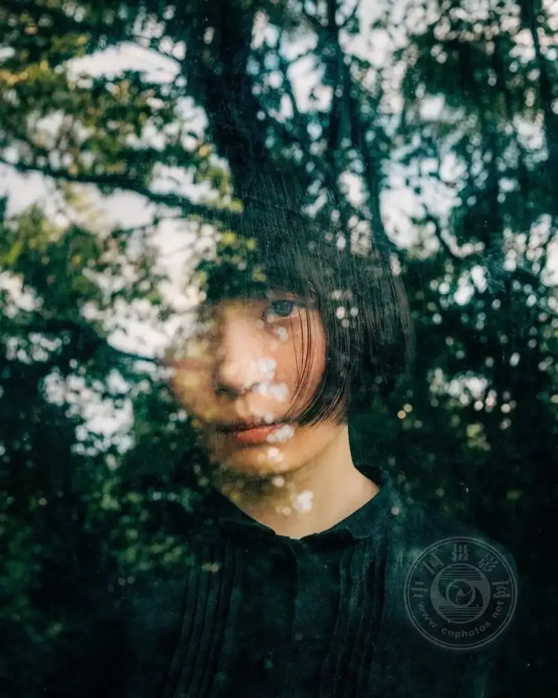
@takeru kohara
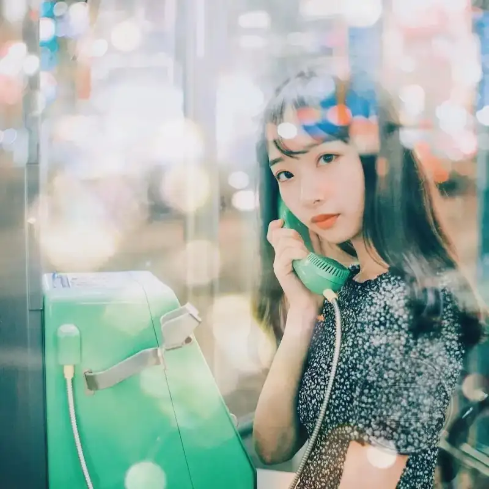
©takutaki
Small tips for the foreground:
Watch the contrast of sharp and soft. The subject must be sharp, and the supporting objects must be soft. You can also use a wide-angle lens or shoot from a low angle to make the viewer feel more drawn into the frame.
Next time you take photos, if you feel short of ideas, look around for objects that can serve as a foreground. Change your usual way of shooting, and you may find a surprise!